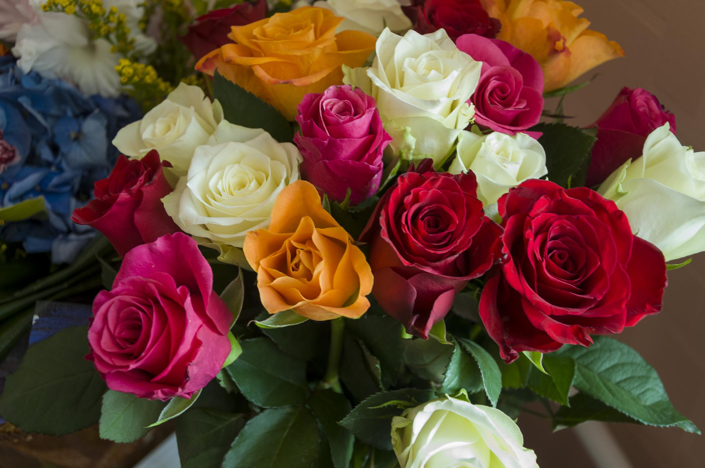

Plantas populares
Rosas
Las rosas son conocidas por su belleza y fragancia. Son una de las flores más populares en jardineria y vienen en una amplia variedad de colores y formas.
!Bienvenido! Aquí encontrarás consejos útiles, información sobre diferentes típos de plantas y técnicas de jardineria.
Las rosas son conocidas por su belleza y fragancia. Son una de las flores más populares en jardineria y vienen en una amplia variedad de colores y formas.